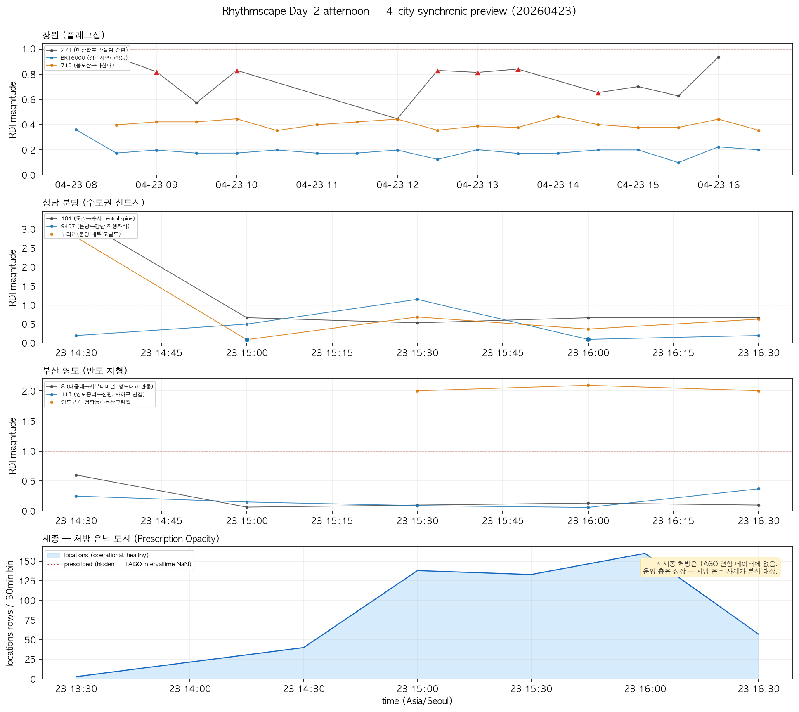
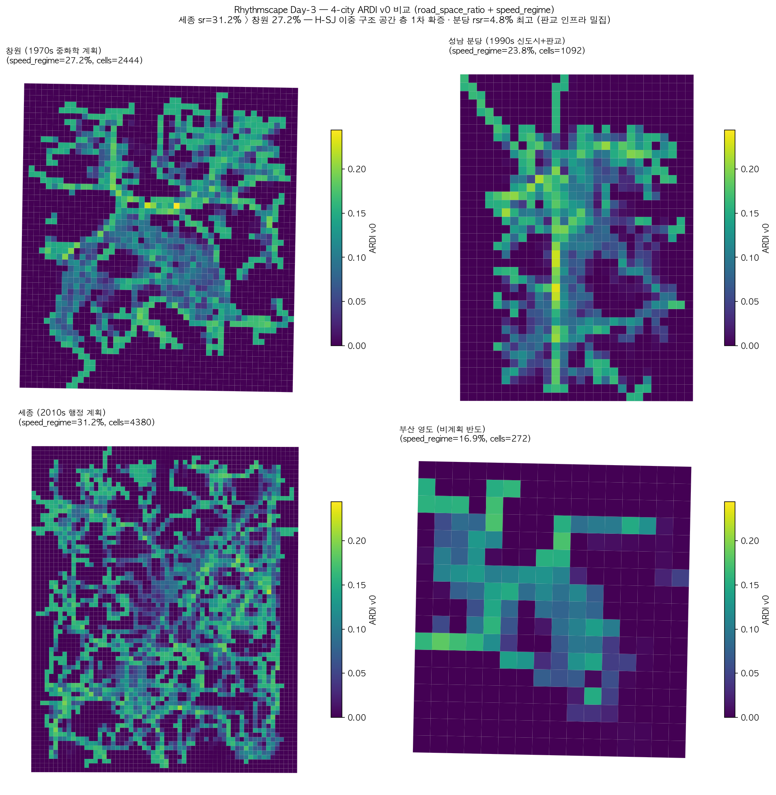
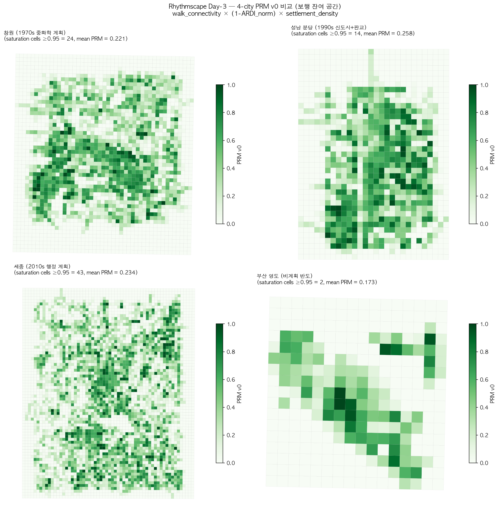
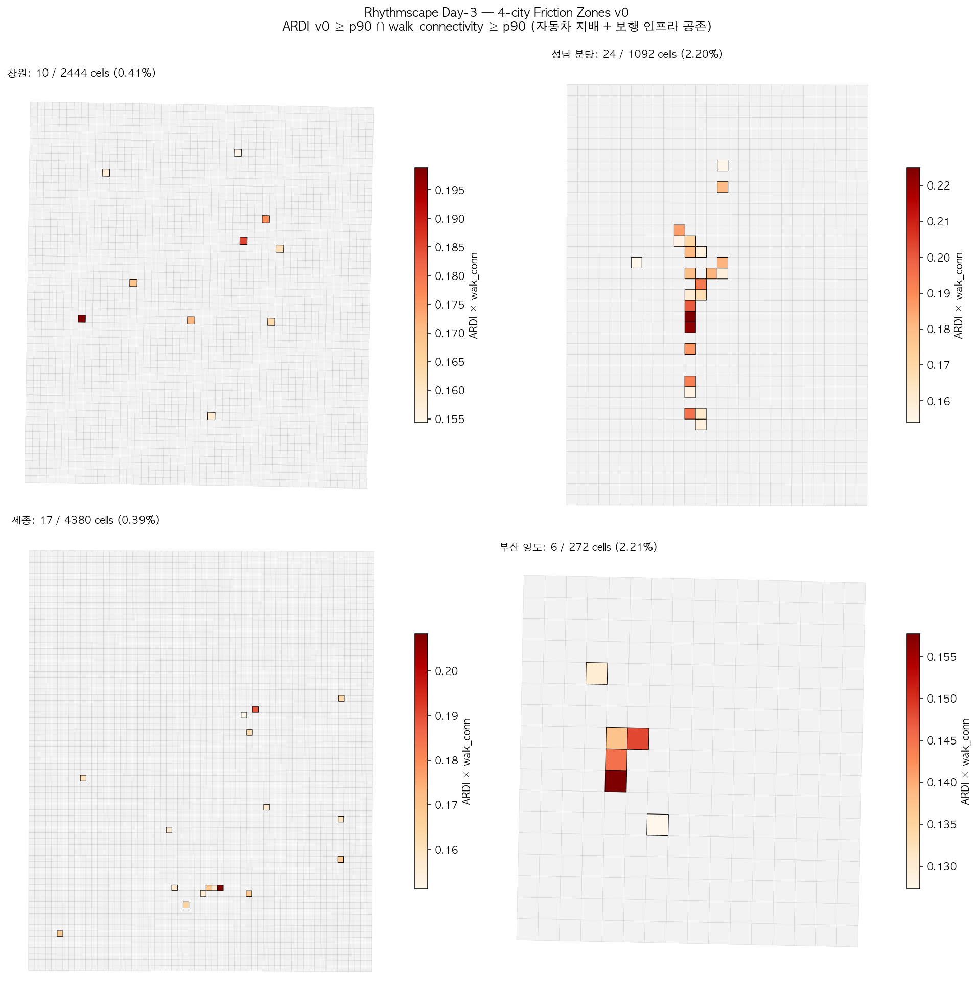

네 도시(창원·성남 분당·세종·부산 영도)는 Lefebvre의 prescribed-lived 이항 위에서 서로 독립적인 이론 위치를 점유한다. 본 대시보드는 Day 3 오후 시점의 ARDI · PRM · RDI · friction zone 교차 관측을 요약한다.
| 도시 | RDI bins | flag rate | ARDI mean | speed_regime | PRM mean | PRM sat | Friction |
|---|---|---|---|---|---|---|---|
| 창원 (flagship · 1970s 중화학 계획) | 2871 | 9.65% | 0.0488 | 27.19% | 0.2211 | 24 | 10 (0.41%) |
| 성남 분당 (1990s 신도시 + 판교) | 811 | 9.25% | 0.0476 | 23.80% | 0.2585 | 14 | 24 (2.2%) |
| 세종 (2010s 행정중심 계획) | 111 | 11.71% | 0.0551 | 31.22% | 0.2343 | 43 | 17 (0.39%) |
| 부산 영도 (비계획 반도 축적) | 871 | 11.37% | 0.0341 | 16.93% | 0.1734 | 2 | 6 (2.21%) |
| 도시 | 노선 | 역할 |
|---|---|---|
| 창원 | 710 | 광역 결핍 — 공식 광역버스 타입 부재, 좌석으로 대체 |
| 성남 분당 | 9407 | 광역 특권 — 강남 직행좌석, 통근 회랑 |
| 세종 | 1004 | 광역 필수성 — 대전 유성-세종 행복도시 결합 |
| 부산 영도 | 113 | 광역 왜곡 — 다리 병목을 통과한 사하구 연결 |
bis.sejong.go.kr 직접 스크래핑으로 외부 처방 확보 후 RDI 재산출. 두 층에서 일관된 증거:


